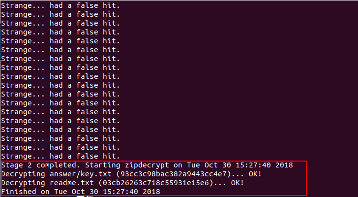
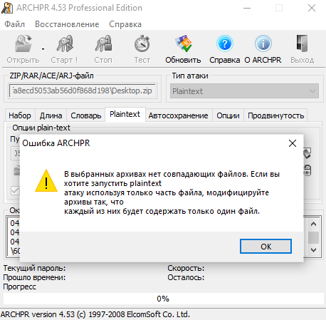

Zip
File Structure
The ZIP file is mainly composed of three parts, respectively
| Compressed Source File Data Area | Core Directory | Directory End |
|---|---|---|
| local file header + file data + data descriptor | central directory | end of central directory record |
Each compressed source file or directory in the compressed source file data area is a record, where
- local file header - the file header is used to identify the beginning of the file, and the information of the
compressed file is recorded. The file header identifier here starts with a fixed value of
50 4B 03 04(hex),PK\x03\x04(bytes) and is also important for the header ofZIP. - file data - file data records the data of the corresponding compressed file
- data descriptor - the data descriptor is used to identify the end of compression of the file. This structure will only appear if the 3 bit of the general tag field in the corresponding local file header is set to 1. After compressing the file source data
- Central directory - core directory
- The directory information of the compressed file is recorded, and each record in the data area corresponds to one piece of data in the compressed source file data area.
| Offset | Bytes | Description |
|---|---|---|
| 0 | 4 | Central directory file header signature = 0x02014b50 |
| 4 | 2 | Version made by |
| 6 | 2 | Version needed to extract (minimum) |
| 8 | 2 | General purpose bit flag |
| 10 | 2 | Compression method |
| 12 | 2 | File last modification time |
| 14 | 2 | File last modification date |
| 16 | 4 | CRC-32 |
| 20 | 4 | Compressed size |
| 24 | 4 | Uncompressed size |
| 28 | 2 | File name length (n) |
| 30 | 2 | Extra field length (m) |
| 32 | 2 | File comment length (k) |
| 34 | 2 | Disk number where file starts |
| 36 | 2 | Internal file attributes |
| 38 | 4 | External file attributes |
| 42 | 4 | Relative offset of local header |
| 46 | n | File name |
| 46+n | m | Extra field |
| 46+n+m | k | File comment |
- End of central directory record(EOCD) - directory end identifier
- The end of directory identifier exists at the end of the entire archive package and is used to mark the end of compressed directory data. Each compressed file must have one and only one EOCD record.
See Official Documentation for more details.
Main attack
Blasting
Here are two tools for blasting.
- Windows - ARCHPR

Violent enumeration, running dictionaries, plaintext attacks, everything.
- Linux - fcrackzip
-b Specifies that the mode is bursting,
-c1 specifies the password type as a pure number, other types can be rtfm,
-u this parameter is very important or does not display the cracked password,
-l 5-6 can specify the length
root@kali:fcrackzip -b -c1 -u test.zip
CRC32
Principle
CRC itself means "redundant check code", and CRC32 means
that a check value of 32 bit ( 8 hexadecimal number) is generated. Since CRC32 generates a check value, every
bit bit of the source data block participates in the calculation, so even if only one bit changes in the data block, a
different CRC32 value will be obtained.
The CRC32 checksum appears in many files such as the png file, as well as the CRC32 checksum in ZIP. It is worth
noting that CRC32 in ZIP is the checksum value of the unencrypted file.
This has led to an attack based on CRC32.
- There is very little content in the file (mostly in the game, it is about
4 bytes) - An encrypted password is very long
Instead of blasting the password of the compressed package, we directly blast the contents of the source file (usually visible strings) to obtain the desired information.
Example
Abctf-2016: Zippy
For example, we create a new flag.txt with the content 123 and encrypt it with the password !QAZXSW@#EDCVFR$.

And we went to calculate the CRC32 value of the file and found that it matches the CRC32 value in the above
figure.
File: flag.txt
Size: 3
Time: Tue, 29 Aug 2017 10:38:10 +0800
MD5: 202cb962ac59075b964b07152d234b70
SHA1: 40bd001563085fc35165329ea1ff5c5ecbdbbeef
CRC32: 884863D2
Warning
The CRC32 value of all possible strings we enumerated during blasting is to correspond to the CRC32
value in the compressed source file data area.
import binascii
import itertools
from string import ascii_letters, digits
alph = ascii_letters + digits + '+/='
crcdict = {}
print('computing all possible CRCs...')
for x in itertools.product(list(alph), repeat=3):
st = ''.join(x).encode()
crc = hex(binascii.crc32(st))[2:]
crcdict[crc] = st
print('Done!')
f = open('flag.zip', 'rb')
data = f.read()
f.close()
crc = data[14:18][::-1].hex()
if crc in crcdict:
print(crcdict[crc])
else:
print("FAILED!")
According to the file size in each compressed package, it can be inferred that the CRC32 attack method is used, and
the contents of each compressed package are obtained, and then an encrypted compressed package is obtained after
the Base64 decoding, and the blast is obtained by flag.
Clear text attack
Principle
- An encrypted compressed file
- Compressed files for compressed files, such as
2345, pressure,WinRAR,7z.ZIPversion number, etc., can be understood through file attributes. If it is aLinuxplatform, usezipinfo -vto view the details of aZIPpackage, including encryption algorithms, etc. - Know some of the contiguous content of a file in the archive (at least
12 bytes)
If you already know part of the encrypted file, such as the readme.txt file found on a website, you can start trying
to crack it.
First, package this plaintext file into a ZIP package, such as readme.txt into readme.zip.
After the packaging is complete, you need to confirm that the compression algorithm used by both is the same. A simple
way to judge is to open the file with WinRAR, and the same file is compressed with the same volume. If they are the
same, it basically means that the compression algorithm you are using is correct. If it is different, try another
compression algorithm.
Tools
- Windows - ARCHPR
- Linux PKCrack
Warning
It is recommended to use the ARCHPR of Windows. One is faster and more stable.
Example
2015 Guangzhou Strong Net Cup: Blasting?
First of all, we got such a question, the title of the title is Blasting?, it is obvious that this problem is definitely to use a cracking tool, very violent.
First step, analyze the compressed package file
After we downloaded this tarball, we saw that the file name is *.zip. We can immediately think of several ways
to crack the zip package. We extract the zip file and find that there are two files, respectively, Desktop.zip
and readme.txt, let's see what is written in readme.txt?

After opening it turned out to be qianwanbuyaogeixuanshoukandao!!!, the questioner did not want the player to see,
this question is still a bit interesting. Let's take a look at the Desktop.zip. We can see that there is
a readme.txt file and a answer folder. There is a key.txt file in the answer folder. flag should be Hidden
here.
Step 2, analyze the crack method
This topic got the hand, we first found that the extracted file and the Desktop.zip tarball contain the same
file readme.txt, and did not give other relevant information, and the file size is greater than 12Byte, We
compare the readme.txt in the compressed package with the value of CRC32 in readme.txt in the original
compressed package. We find that the two values are the same, which means that the extracted readme.txt is
encrypted and compressed. The plaintext of readme.txt in the package, so we can boldly guess that this is
probably a plaintext encryption.

Step 3, try plaintext attack
Now that we know that it is a plaintext attack, we will crack the compressed package. Since the extracted readme.txt
is the plaintext of readme.txt in the encrypted archive, compress readme.txt to * .zip* file, then fill in the
corresponding path in the software to start plaintext attack, here we will introduce different methods of clear-text
attack under Windows and Ubuntu.
Method 1, pkcrack for plaintext attack
Download link: pkcrack
We can just write a shell script to download it:
#!/bin/bash -ex
wget https://www.unix-ag.uni-kl.de/~conrad/krypto/pkcrack/pkcrack-1.2.2.tar.gz
tar xzf pkcrack-1.2.2.tar.gz
cd pkcrack-1.2.2/src
make
mkdir -p ../../bin
cp extract findkey makekey pkcrack zipdecrypt ../../bin
cd ../../
Save the file to pkcrack-install.sh and run it to the current directory, giving it an execute permission x.
chmod 777 install.sh
Or directly:
chmod u+x install.sh
Then run ./pkcrack-install.sh
Then a folder of bin will be generated in the current directory. We will directly enter the bin folder and see
the pkcrack file, which will directly crack the file.
./pkcrack -c readme.txt -p readme.txt -C ~/download/misc/Desktop.zip -P ~/download/misc/readme.zip -d ~/decrypt.zip
The parameter options we used are as follows:
-C: target file to be cracked (including path)
-c: crack the name of the plaintext file in the file (the path does not include the system path, starting from the
zip file level)
-P: compressed plaintext file
-p: the name of the plaintext file in the compressed plaintext file (that is, the location of readme.txt in readme.zip)
-d: Specify the file name and the absolute path where it is located, and output the decrypted zip file.
The results after decryption are as follows:




We have come to the final flag: flag{7ip_Fi13_S0m3tim3s_s0_3a5y@}
The pit is coming
It seems that everything is going well, but it took more than two hours.
Method 2, ARCHPR for plaintext attack
First of all, I suggest that you have the ARCHPR 4.53 version. I tested it successfully in this version. The
successful screenshots are as follows:

I believe many of my friends encountered the following situation when using ARCHPR:

I was in a state of collapse at the time, and this will happen.
In later learning, it was found that files compressed with 7z were decompressed with 7z, which is a file format that
uses multiple compression algorithms for data compression, and the traditional zip
, rar Compared with it, its compression ratio is larger, and the compression algorithm used is different.
Naturally, there may be a mismatch. Therefore, we must analyze the original person when decompressing the original
compressed package and encrypting the file. What is the way to encrypt and decrypt, so the problem of this
question is obvious. After verification, I found out that the subject is compressed with7z`.
Try again
We have found this problem, we go to the official website to download 7zip: https://www.7-zip.org/
Then we decompress the original compressed file with 7z, and then compress readme.txt with 7z. Then we can use
the ARCHPR for plaintext attacks.
The results are as follows:

We unzipped Desktop_decrypted.zip and checked key.txt in the answer directory.
So the final flag is: flag{7ip_Fi13_S0m3tim3s_s0_3a5y@}
Pseudo encryption
Principle
In the core directory area in the ZIP format above, we emphasize a 2 bytes called the general purpose bit flag,
which has different meanings.
Bit 0: If set, indicates that the file is encrypted.
(For Method 6 - Imploding)
Bit 1: If the compression method used was type 6,
Imploding, then this bit, if set, indicates
an 8K sliding dictionary was used. If clear,
then a 4K sliding dictionary was used.
...
Bit 6: Strong encryption. If this bit is set, you should
set the version needed to extract value to at least
50 and you must also set bit 0. If AES encryption
is used, the version needed to extract value must
be at least 51.
...
In 010Editor we tried to modify this 1 bit to 0 -> 1.

Open the file again and find that you have requested a password.

Modify the method of pseudo encryption:
- Modify the universal bit mark in
16 binwalk -eignores pseudo encryption- In the
Mac OSand someLinux(such asKali) systems, you can directly open the pseudo-encryptedZIPpackage. - Detect pseudo-encrypted gadget
ZipCenOp.jar - Sometimes with the fix function of
WinRar(this method sometimes has a miraculous effect, not only for pseudo encryption)